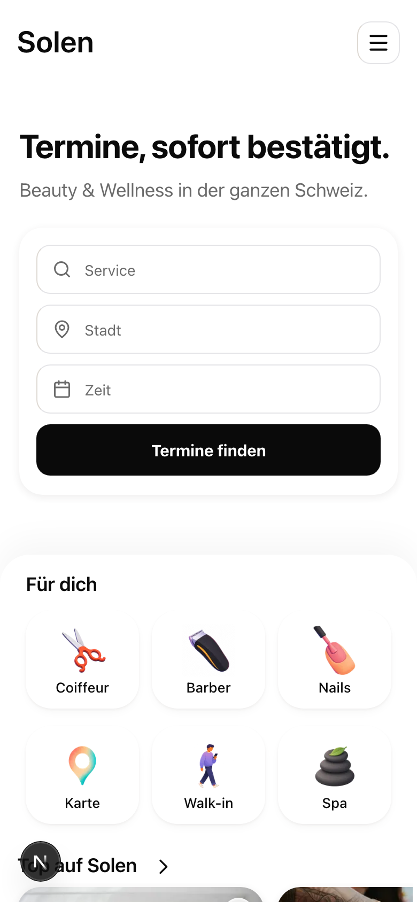

You want full-bleed a lot, just not on the confirmation. The judges ranked where it fits without breaking your own 80/17 law; the key finding: PHOTO full-bleed costs nothing, because photography already carries the color in your system. Photos here are real captures at their captured resolution, so they render a bit soft at this size; the treatment is what you are judging. Answer like "FB1 a, FB3 a, FB4 a, FB5 yes, FB7 no".
FB1
Homepage hero: one full-bleed photo behind the search
The entry statement. Everything below stays white, which also retires gray bands. Risk: exactly ONE hero, ever; rows below stay carousels per your G2 pick.
Today

Full-bleed photo + frosted search
Appointments, instantly confirmed.
Beauty and wellness across Switzerland.
Service, salon or stylist
Everything below the hero stays white: your categories, then the carousels.
a yes, photo herono keep the white hero
FB2
Salon page: the gallery bleeds edge to edge
The judges' number one: it is your core conversion page, and the intensity is the salon's own work, not decoration. Controls over the photo stay frosted per your locked recipe.
Edge-to-edge PDP hero
Glow Lab Basel
Spalenberg 5, Basel
Below: your existing white PDP body, unchanged. Falls back to the contained layout when a salon's photo is low quality.
a yes, bleed the galleryno keep it contained
FB3
Category landings: photo carries the category
One-off entry pages (Coiffeur, Barber, Nails, Spa, cities). The photo does what color-coding would be tempted to do; your neutral-tags lock stays untouched.
Barber landing hero
Basel
Barbershop
Search results below stay in your grid, no hero on the results tier.
a yes, on all category and city landingsno
FB4
Onboarding welcome: the looks montage
Seen once per user, costs nothing from the daily budget, and previews Inspo. The gradient finish (fork b) is the ONE place your refs' color pull could live in product, and it conflicts with 80/17: it needs your named yes.
a, photo montage welcome
Find your look.
Get started
b, gradient finish (against 80/17, needs your yes)
All set.
Go to home
a photo welcomeb AND the gradient finish (reopens 80/17 for this one screen)no
FB5
Loyalty tier-up: full-bleed INK
Twice a year at most, and the celebration color is your own strongest one: black-card energy, no new hue. Never interrupts a booking; appears on the rewards or profile visit.
The tier-up takeover
Solen Status
Gold
6 visits in 6 months
yes a tier-up is a different class of moment than the confirmationno keep even tier-ups calm
FB6
Marketing pages: dark full-width bands with your real product inside
One-off persuasion pages (the for-salons family), the zone where product restraint was never meant to bind at full strength. The tiles show the REAL dashboard, never a fake screenshot.
Ink band on the for-salons page
Your salon, fully in hand.
Calendar, team and payments in one place.
Alternating dark and white sections; the dark stays on marketing, never in the product chrome.
a yes, dark marketing bandsno marketing stays white too
FB7
Walk-in "you're up": the green flood
The riskiest of the set, flagged honestly: it is function (readable across a barbershop), uses only your locked success green, but it is a cousin of the celebration you declined, and green-as-surface is new grammar.
State-change flood (only when your number is called)
You're up
4
Barbershop Central
yes flood on the called stateno the tracker stays calm in every state